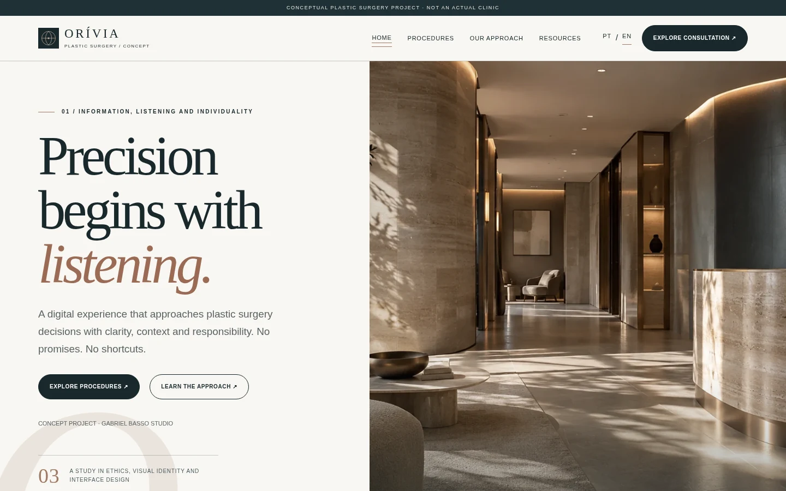
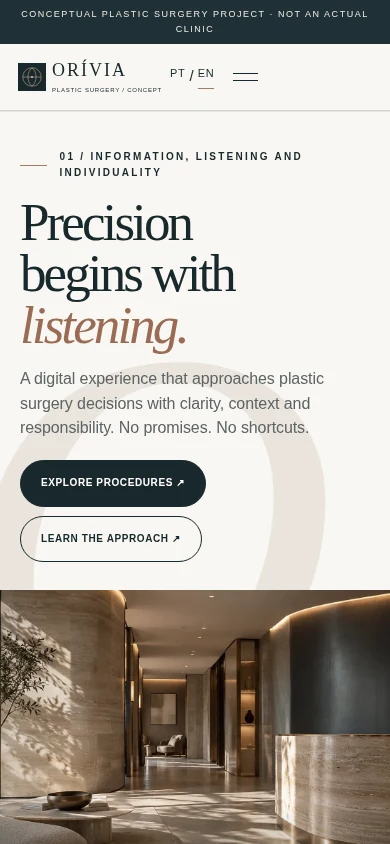

Information over promises
Each procedure includes purpose, limitations, potential risks and recovery considerations.
Case study / 03 — 04
Healthcare · Information architecture
A restrained identity. Information comes first.
A conceptual plastic surgery website designed to explain medical topics with care and clarity.

Surgical subjects call for approachable information, clear limits and room for individual assessment. This concept prioritises guidance and straightforward navigation without persuasive exaggeration or supposed outcome imagery.
People seeking introductory information about procedures and how an assessment consultation works.
Identity, six procedure guides, FAQs and a demonstration consultation request.
Web Design / UI/UX / Art Direction
Blue charcoal, soft bronze and generous negative space create a discreet identity. Conceptual architectural imagery sets the mood without implying real patients, facilities or clinical outcomes.
Charcoal, bronze and mineral grey establish a sober institutional tone with clear contrast and reading rhythm.
 01 — Visual direction
01 — Visual directionEach procedure includes purpose, limitations, potential risks and recovery considerations.
The interface separates educational content, FAQs and consultation requests.
The simulation asks for basic details only, not medical history or photographs.
Browse topics and the approach to care.
Read general indications, risks, limitations and FAQs.
Choose a conceptual topic, date and time.
Confirm the details with an explicit demonstration notice.
Implemented desktop and mobile captures place navigation and educational content ahead of decoration.


A conceptual plastic surgery website designed to explain medical topics with care and clarity.
Explore the experienceGeneral information, limitations and risks.
Readable content organised by topic.
A calendar and review step, with no real booking.
No sensitive health information is requested.
ORÍVIA is an information architecture exercise for a sensitive sector. It does not represent a licensed physician, real clinic or booked consultations.
About the imagery. Architectural imagery is illustrative and does not depict an actual medical office.
Next project / 04 — 04
NÓRRIA